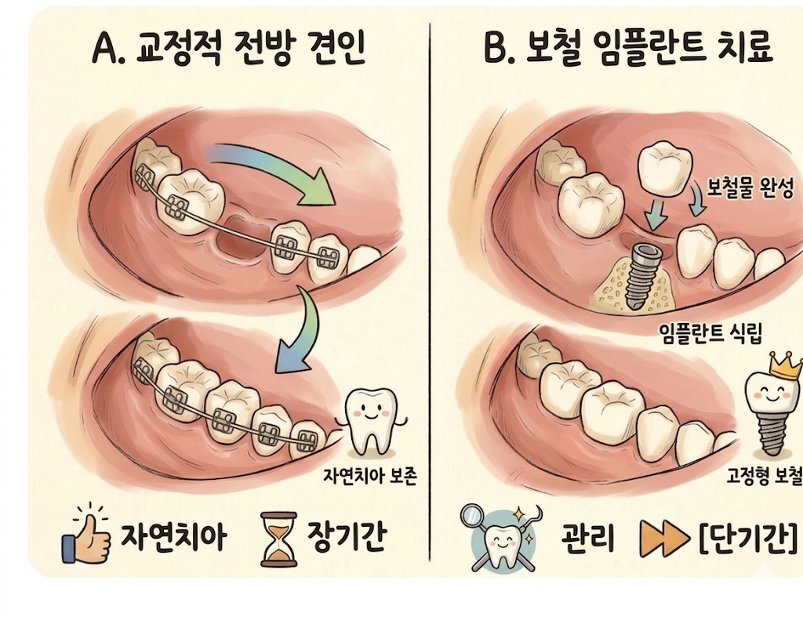

어금니 발치 했을 때 임플란트 vs 교정 (How old are you?)
몇 년 전 어떤 교수님께서 강의 중에 갑자기 치아에 대한 썰을 푸시다가, 당신도 치아가 안좋아 발치를 했는데 그게 그렇게 허하고 며칠동안 꽤나 우울했다는 이야기를 하신 적이 있습니다.
아무리 세상이 좋아져 임플란트로 결손된 치아를 대체하는 게 쉬워졌다고 해도, 자기의 치아가 없어진다는 건 꽤나 허전하고, 또 우울한 일일 수도 있겠구나 싶었습니다.
이와는 반대로 가끔씩은 "이 치아 좀 불편한데 그냥 뽑아버리고 임플란트 하면 안될까요?" 라고 너무 쉽게 치아를 뽑고 마치 임플란트를 만병통치약처럼 생각하시는 환자분들도 계십니다. 정말 임플란트가 만병통치약이고, 치아가 없으면 임플란트가 유일한 선택지일까요?

어금니 결손 구내사진
이렇게 어금니 결손으로 내원하신 환자분들과 상담할 때 저는 환자분의 나이를 굉장히 중요하게 생각합니다. 교정 치료에 들이는 기간 대비 그 효용을 누릴 수 있는 기간이 길수록 좋기 때문이죠.
즉 다른 조건들(잇몸뼈의 건강, 구강 관리 상태, 생활 습관, 등등)이 모두 똑같다면
10대부터 30대같이 비교적 젊고 앞으로 50년 이상의 기대 수명이 남아있는 환자분들에게는 임플란트보다는 교정을, 반대로 50대부터 60, 70대 환자분들에게는 임플란트를 권해드립니다. (간혹 부분적인 교정이 필요할 수는 있지만)

A. 교정적 전방 견인 / B. 보철 임플란트 치료
1) 교정 치료를 통해 뒷쪽에 있는 어금니들을 앞으로 당겨 결손된 치아 공간을 메운다.
2) 보철 치료를 통해 (임플란트 or 브릿지) 결손된 치아 공간을 대체한다.
임플란트를 심으면? 치료 기간이 짧습니다. 금새 없어진 치아를 대체하죠! 그렇지만 앞으로 50년 넘게 살아가면서 임플란트를 정기적으로 '잘' 관리해줘야 합니다. 아무리 요새 임플란트의 수명이 길다고는 하지만, 50년 넘는 기간동안 한 번도 탈이 나지 않을 가능성은 높지 않습니다.
교정치료를 하면? 치료 기간이 상대적으로 깁니다. 어금니를 앞으로 이동시켜야하는 거리에 따라 다르지만, 경우에 따라 3년 이상 기간이 걸릴 수 있습니다. 그렇지만
(교정 기간 + 교정 시의 불편감) < (남아있는 기대 수명 기간동안 자연치아를 사용할 경우의 이득)
이라고 판단되는 경우 좋은 치료 옵션이 될 수 있습니다.
물론 정확한 진단과 치료 계획은 담당 교정과 전문의 선생님과의 상담이 필요하다는 점 잊지 마시구요 :)
이상 교정과의사 손창한이었습니다.